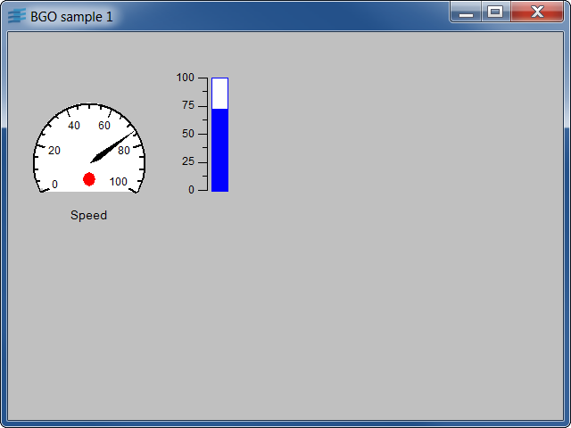

Base Value FeedShows how to feed values from an application to a displayed panel.
This is a basic example of how to connect your application data to
prototypes in a panel. The panel contains an IlvGroup that serves as the
main feed. This group is named "MainGroup" and is invisible when the application runs.
This group is connected to various prototype instances. The application sends values
at regular intervals to this group, which dispatches them in turn to the prototype instances.
It is recommended to open the file data.ilv in Studio, and observe that all values
that are fed by the application (speed) have been added to the main group object as
specific attributes of this group.
IlvGroupHolderIlvGroup